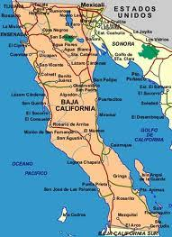
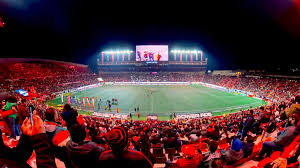

Tradiciones

Fiestas Regionales
- Fiestas de la Vendimia
- Carnaval de Ensenada
- Ferias Regionales
- Semana Santa
Conoce las tradiciones, cultura, gastronomía y lugares turísticos más impresionantes del norte de México.
Explorar Página Ver Spot TurísticoBaja California Norte es un estado ubicado en el noroeste de México, reconocido por su gran diversidad natural, cultural y turística. Se caracteriza por sus playas, desiertos, montañas y valles, además de su cercanía con Estados Unidos, lo que impulsa el comercio y el turismo.
Su gastronomía destacada por los mariscos, la ensalada César y los vinos del Valle de Guadalupe. Entre sus principales lugares turísticos se encuentran Tijuana, Ensenada, Rosarito,Mexicali y San Felipe.Baja California Norte combina modernidad,naturaleza y tradicion,siendo un destino muy importante de México.
Esta página está dirigida a turistas y personas interesadas en conocer más sobre Baja California Norte, ya que proporciona información sobre sus características, cultura, tradiciones y atractivos turísticos.
El objetivo de esta página es promover el turismo, difundir la riqueza cultural, natural y gastronómica de Baja california Norte,además de informar sobre sus destinos principales para atraer visitantes y fortalecer el desarrolo economico de la region



La música norteña y banda son muy populares en Baja California Norte.


Destino turístico reconocido por La Bufadora y sus playas.

Rosarito destaca por sus playas y vida nocturna.

Capital de Baja California Norte, famosa por su cultura y gastronomía.

Conocido por sus playas y actividades acuáticas.
El Estadio Caliente es uno de los lugares turísticos más visitados de Tijuana.

La afición de Xolos crea uno de los mejores ambientes del fútbol mexicano.

Alumno del Colegio de Bachilleres Plantel 5 Satélite, de 17 años apasionado de conocer lugares nuevos de México ver las diferencias entre un estado y otro. Al que el alumno estudio programacion en su trayecto de preparatoria diseño esta pagina de un estado que es se encuentra el noroeste de México que busca transmitir lo bonito que es el estado de que hay lugares muy buenos que visitar.
Este proyecto busca promover los lugares turísticos de Baja California Norte.